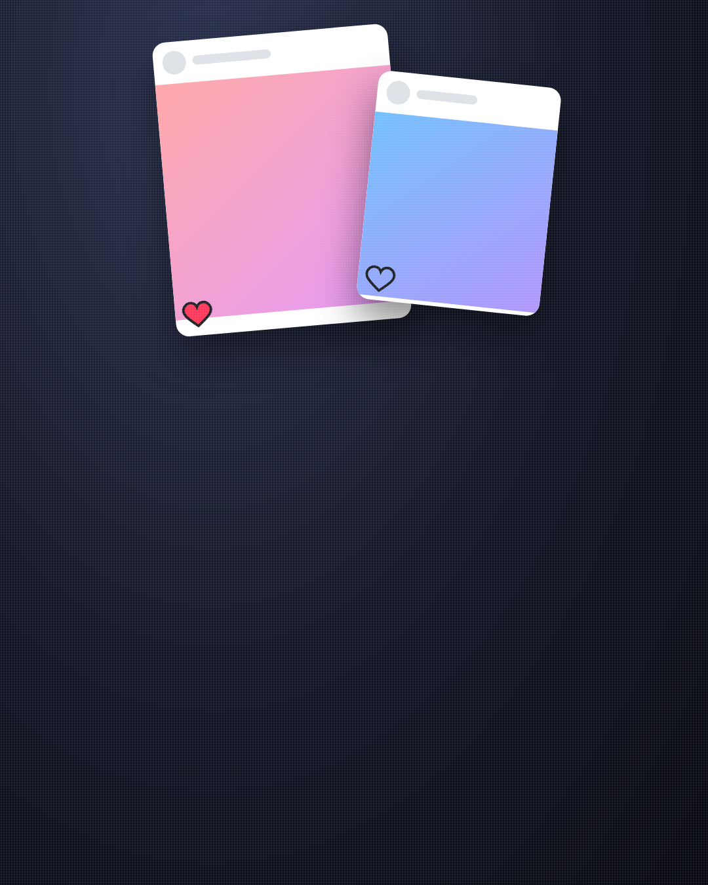
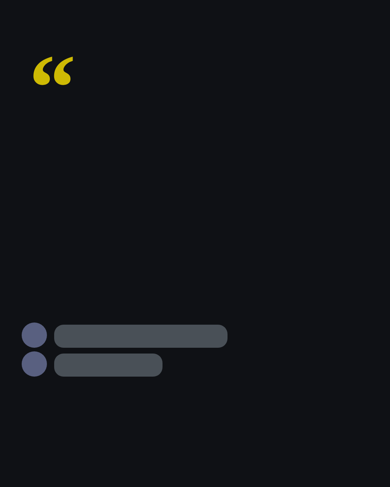
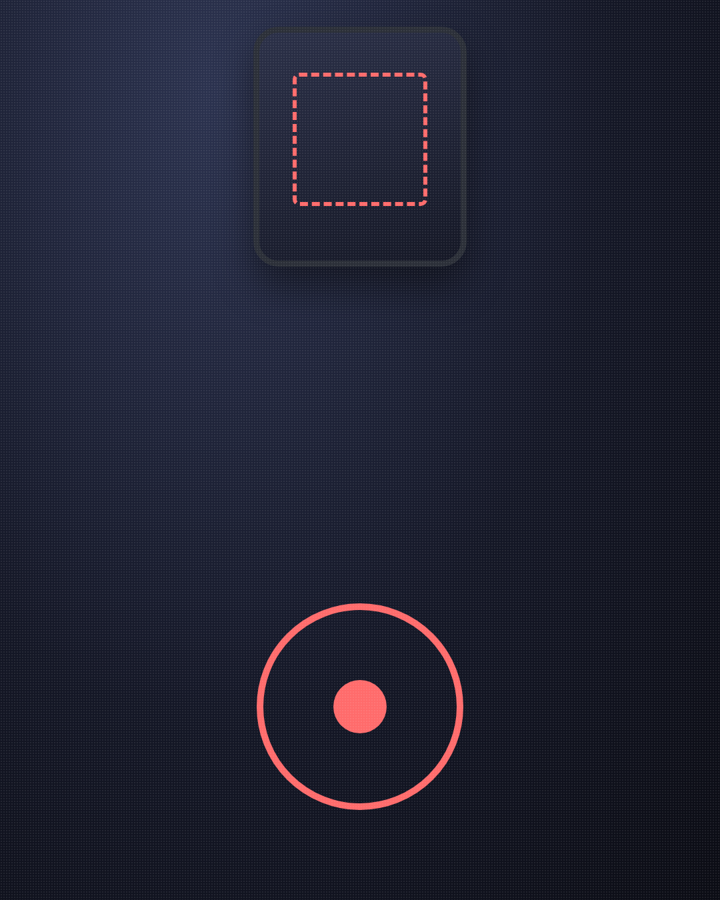
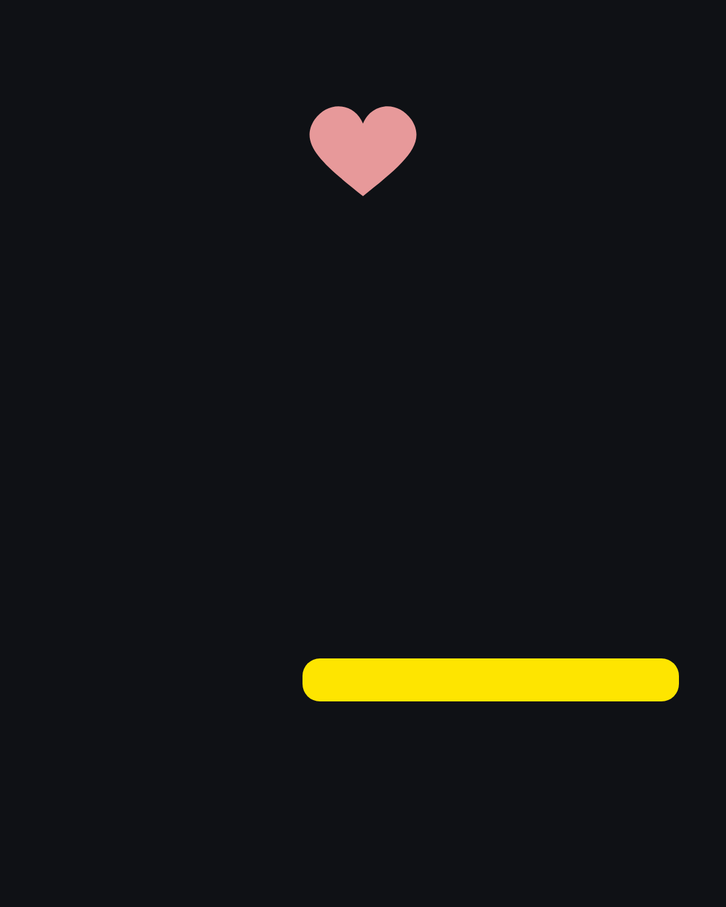
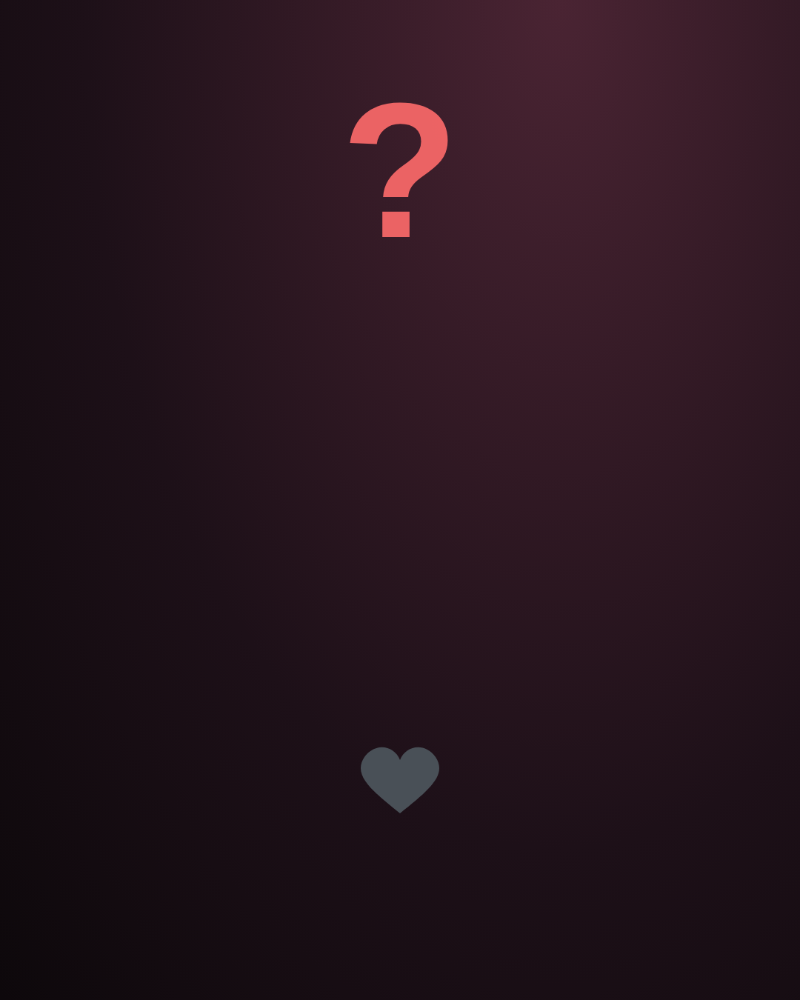
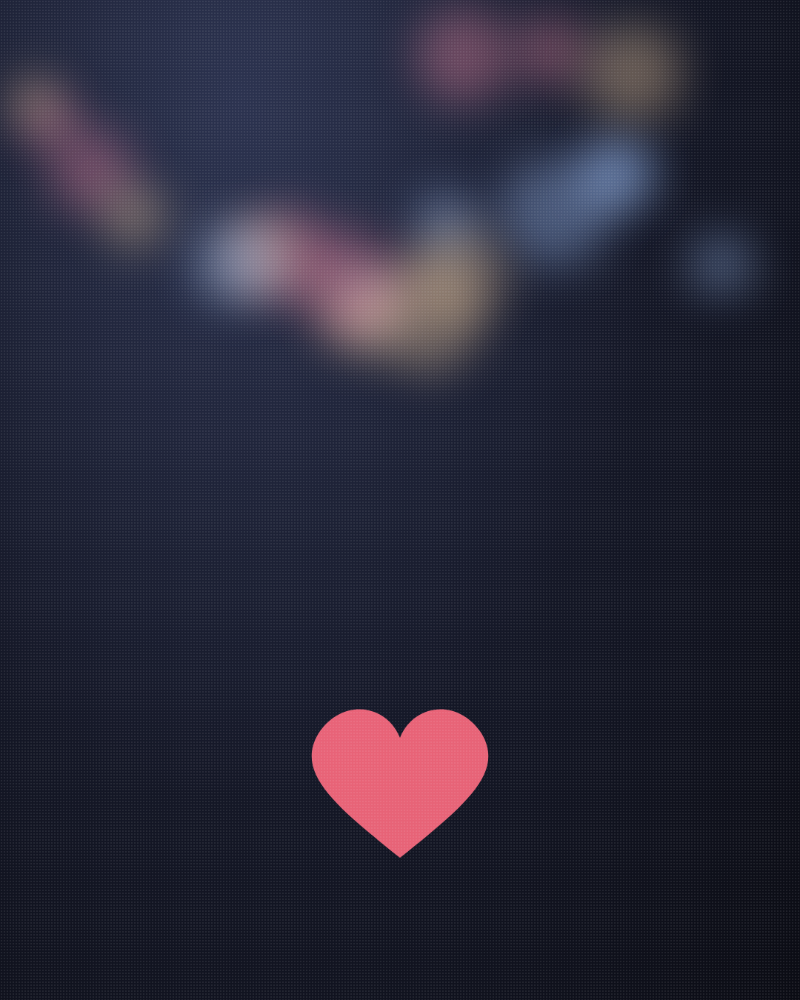

남자친구가 다른 여자 게시물에
좋아요 누를 때, 진짜 뜻
(하트 하나에 밤새 생각한 적 있다면.)
1/14
@mszexc
넘겨보세요 →

남자친구 활동 기록에
모르는 여자 사진, 하트 하나.
그날 밤 잠이 안 와요.
2/14
@mszexc
남자들끼리 하는 말 #49

남자 입장에서 말하면,
좋아요는 대부분 생각 없이 눌러요.
3/14
@mszexc
남자들끼리 하는 말 #49

"스크롤하다가 손가락이 먼저 갔어."
(진짜 이게 제일 흔해요.)
4/14
@mszexc
남자들끼리 하는 말 #49

근데 이런 좋아요는
그냥 넘기면 안 돼요.
5/14
@mszexc
남자들끼리 하는 말 #49

첫 번째.
같은 사람에게만 계속.
(한 번은 우연, 매번은 관심이에요.)
6/14
@mszexc
남자들끼리 하는 말 #49

두 번째.
오래된 사진까지 내려가서.
(몇 년 전 사진의 하트는, 찾아본 거예요.)
7/14
@mszexc
남자들끼리 하는 말 #49

세 번째.
좋아요 다음에 DM까지.
(하트는 노크, DM은 문을 여는 거예요.)
8/14
@mszexc
남자들끼리 하는 말 #49

남자들끼리는 이렇게 말해요.
"좋아요 정도는 괜찮지 않냐?"
(괜찮냐고 묻는 순간, 본인도 알고 있어요.)
9/14
@mszexc
남자들끼리 하는 말 #49

그럼 어떻게 말해야 할까요?
캡처를 들이밀며 따지면,
남자는 감시당한다고 느껴요.
10/14
@mszexc
남자들끼리 하는 말 #49

대신 이렇게 말해보세요.
"나 그 하트 보고 좀 신경 쓰였어."
(사실 하나, 내 마음 하나. 딱 이 정도.)
11/14
@mszexc
남자들끼리 하는 말 #49

이 말에
"신경 쓰였구나, 미안" 하는 남자는 괜찮아요.
12/14
@mszexc
남자들끼리 하는 말 #49

반대로 "그게 뭐 어때서?"라고 한다면,
하트보다 그 대답이 문제예요.
13/14
@mszexc
남자들끼리 하는 말 #49

이것만 기억하세요.
하트 하나보다, 당신 마음을 대하는 태도를 보세요.
남자가 하는 말의 뜻은 전자책 1·2권에 · 프로필 링크에서 무료로 받아보세요
14/14
@mszexc
남자들끼리 하는 말 #49